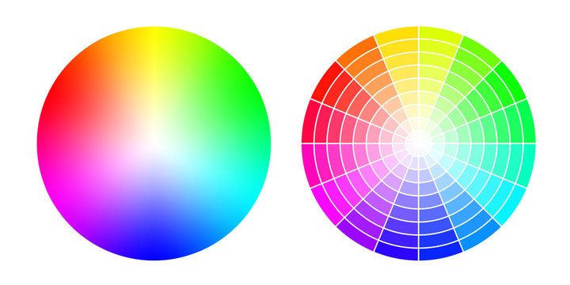

In my suede adventures, color always makes an impression. From Red, to Bright Blue and white, the personality of a shoe is largely assumed by the color. So what do you want it to say about you?
Do you want to be seen as conservative? Maybe a dark brown, black, or grey is for you. Sophisticated? A navy blue, maybe with a nice chain across the top. Deviant? Maybe a set of suede mules with no back to really let the establishment know that you reject the norm.
It took me a while to figure out why my red loafers spoke to me. They were unique, and distinctive. They had historical significance to me. But these are all just justifications. What do these shoes speak about me?
I think it shows flair. But also class. Wearing loafers is a distinctive play. Wearing red loafers is an unmistakable statement. "Yes. I am wearing Red shoes. Could you?"
Could you? You don't have to. Your suede can tell it's own story.
